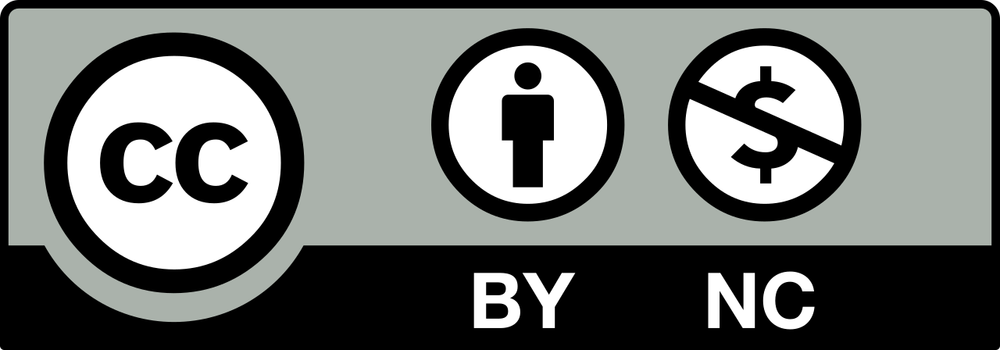

An endless chain of creativity. 8-second loop sounds from artists around the world are randomly streamed and layered in real-time.
Drag circles — closer to center = louder. Throw to fling a circle away. Tap a circle to see its details. Tap ∞ to freeze / unfreeze.
INTO INFINITY project by dublab × Creative Commons The original iOS application was conceived by Dominique Chen (Creative Commons Japan), developed by Kensuke Sembo (exonemo) and Hiroshi Okamura (Ages5&Up), and produced by Alex Taisuke Odajima (APPLIYA Inc.)
All EARs and EYEs are published under CC BY-NC

This Web port is published as OSS since February 2026